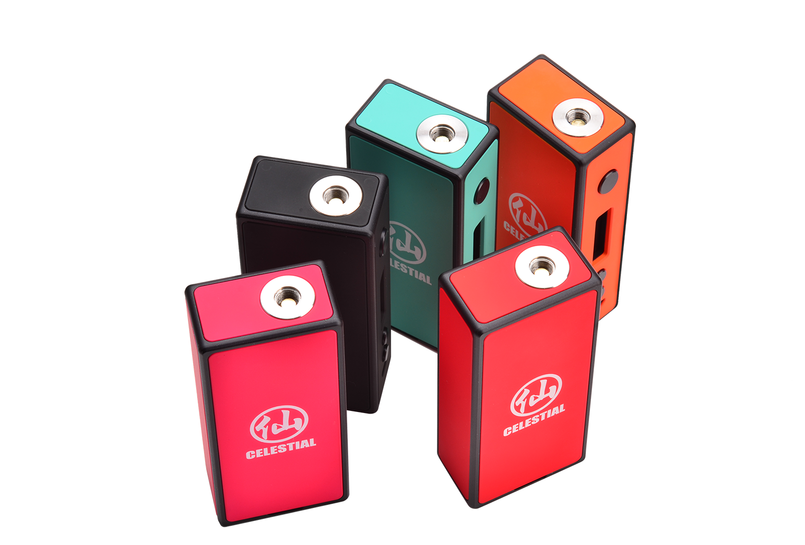
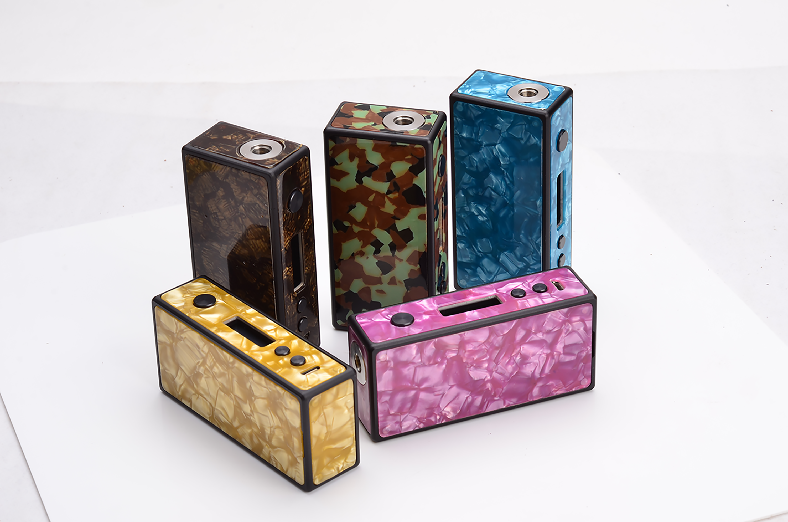

Vape Solutions 仙盒
VS团里致力于制作国产精品.经过3个月的精雕细琢,六芒星仙盒经过36次版本迭代。终于于元宵佳节开启预售。
48
铷铁硼磁铁0.015mm
CNC雕琢100%
自主研发芯片骨架
一体镂空成型
零售价699
点此进入预售界面

独家六面可替换设计
是否已经厌倦了手中盒子一成不变的颜色?是否对自己的审美疲劳和喜新厌旧反感不已。六芒星仙盒借力于48颗高强度铷铁硼，和高精度的CNC雕琢实现了六面可替换设计,从此您手中的盒子的颜色不再单一。从此我们可以大声的告诉世界，仙盒！！！没有颜色！！！

多种工业跨界材料
贝壳树脂，稳定化木这些材料是否是大家所期待的呢。为了解决材料强度问题，VS采用一整块316L钢背板和上述特殊材料正面贴合。使在提高贴片强度的同时，又适当的增加了盒子的重量。限量版毕竟是限量版..
